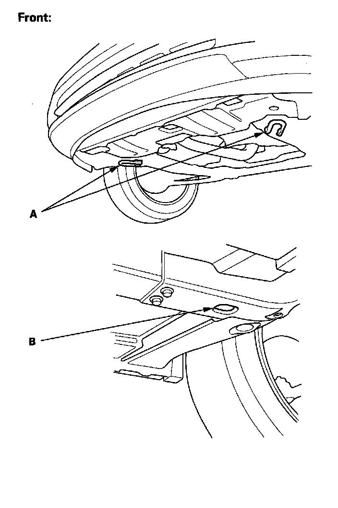
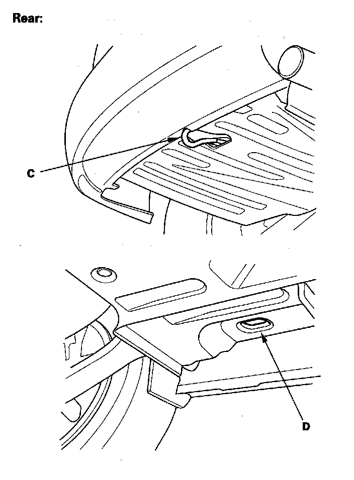

Towing Information: Service and Repair
TowingIf the vehicle needs to be towed, call a professional towing service. Never tow the vehicle behind another vehicle with a rope or chain. It is very dangerous.
Emergency Towing
There are three popular methods of towing a vehicle.
Flat-bed Equipment - The operator loads the vehicle on the back of a truck. This is the best way of transporting the vehicle.
To accommodate flat-bed equipment, the vehicle is equipped with front towing hooks (A), front tie down hook slots (B), a rear towing hook (C), and rear tie down hook slots (D).


The towing hooks can be used with a winch to pull the vehicle onto the truck, and the tie down slots can be used to secure the vehicle to the truck.
Towing
Wheel Lift Equipment - The tow truck uses two pivoting arms that go under the tires (front or rear) and lift them off the ground. The other two wheels remain on the ground. This is an acceptable way of towing the vehicle.
Sling-type Equipment - The tow truck uses metal cables with hooks on the ends. These hooks go around parts of the frame or suspension, and the cables lift that end of the vehicle off the ground. The vehicle's suspension and body can be seriously damaged, if this method of towing is attempted.
If the vehicle cannot be transported by a flat-bed, it should be towed with the front wheels off the ground. If the vehicle is damaged, the vehicle must be towed with the front wheels on the ground.
Manual Transmission
- Release the parking brake.
- Shift the transmission to neutral.
- Leave the ignition switch in the ACCESSORY (I) position so the steering wheel does not lock.
- Make sure all accessories are turned off to minimize battery current draw.
Automatic Transmission
- Release the parking brake.
- Start the engine.
- Shift to the D position, then to the N position.
- Turn off the engine.
- Leave the ignition switch in the ACCESSORY (I) position so the steering wheel does not lock
- Make sure all accessories are turned off to minimize battery current draw.
It is best to tow the vehicle no farther than 50 miles (80 km), and keep the speed below 35 mph (55 km/h).
NOTE:
- Improper towing preparation will damage the transmission. Follow the above procedure exactly. If you cannot shift the transmission or start the engine (automatic transmission), the vehicle must be transported on a flat-bed.
- Trying to lift or tow the vehicle by the bumpers will cause serious damage. The bumpers are not designed to support the vehicle's weight.